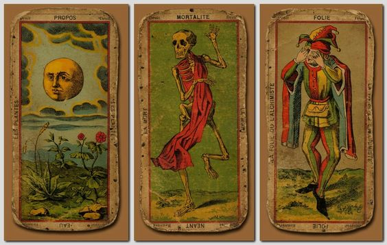
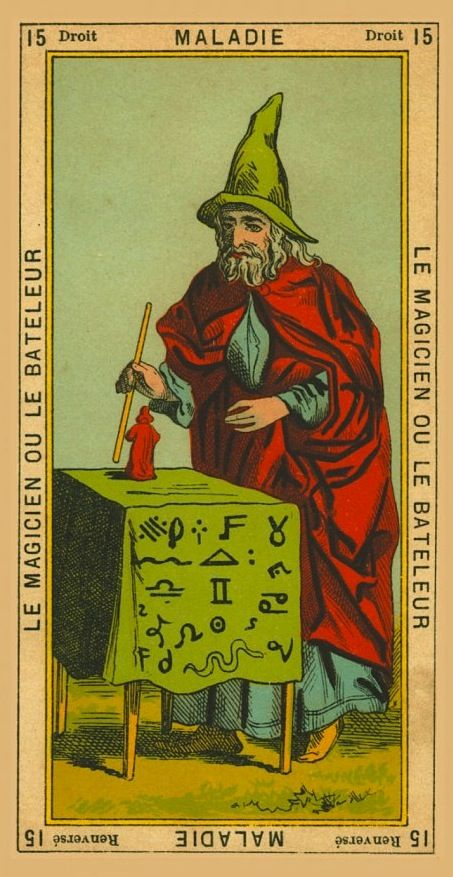
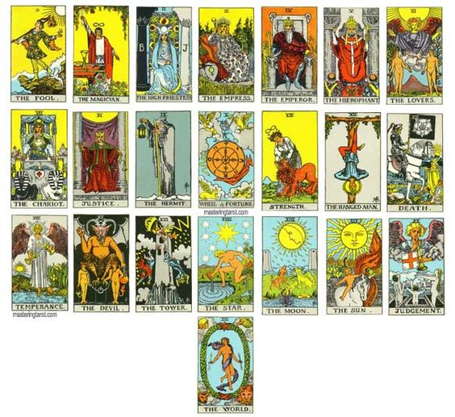

The tarot is a deck of cards often used as a means of consultation and interpretation of events (present, past or future), dreams, perceptions or emotional states that also constitutes a type of cartomancy. Its origins date back to at least the 14th century. The technique is based on the selection of cards from a special deck, which are then interpreted by a reader, according to the order or arrangement in which they have been selected or dealt. The tarot deck is made up of 78 cards, divided into major arcana which are 22 and minor which are 56. The word "arcana" comes from the Latin arcanum, which means 'mystery' or 'secret'.
The Tarot has its origins in the 13th century, when Mediterranean merchants traveled the extensive Silk Road through China, Persia and Africa, bringing among their belongings the first deck of cards known in the West, called Mamluk. Its origin was Islamic and it was organized in four suits. However, another theory born from the occultists of the eighteenth and nineteenth centuries locates its origin in ancient Egypt.
Those who theorize the origin of the Tarot with ancient Egypt, relate it to the goddess Ashtarot, biblical plural of the Phoenician goddess Astarte, the Hebrew Esther, the Persian Stara and the Mesopotamian Ishtar or the Hindu Tara, whose names all refer to the word star, finds its equivalent in the Egyptian goddess Hator.

The term Tarot could also come from tarocchi, an Italian word whose root—taroch—translates as “foolishness” or “madness.” The term taroch was used until the 15th century, when the cards de trionfi—a 70-card deck inspired by popular theatrical festivals during the Italian Renaissance known as trionfo—made their appearance.
Card-deck trionfi generally included gilt decorations and hand-painted illustrations of allegorical and personified motifs. In the 7th century, “the madman” joined this cast of characters, and the game of trionfi became known as tarocho in Italy and taraux—a term that would eventually evolve into tarot—in France.
At the beginning of the 20th century, in excavations carried out in a well of the Sforza Castle in Milan, cards from the 15th century were found with the typical design of the Marseille Tarot. This reinforced the old theory that the Tarot, the first and true, was born in Marseille.

Currently there is a great variety of Tarot decks, each of them can vary in its composition and illustration, this causes the system in which they are used and the way they are interpreted to change. However, there is a traditional structure divided into 2 sections. The standard modern tarot deck is based on the Venetian or the Piedmontese tarot. It consists of 78 cards divided into two groups: the major arcana, which has 22 cards, also known as trumps, and the minor arcana, which has 56 cards. Let's take a look at this structure.
The Major Arcana: First 22 cards of the Deck are called the Major Arcana. Naturally, this means that these cards contain Major or Big mysteries or secrets. These are also often referred to as the ‘Trumps’. These cards start with a card called ‘The Fool’ which has the number 0 (Zero) on it, and continue on till they reach the card called ‘The World’ which has the number 21 (or XXI or Twenty One) on it. These Major Arcana cards show the journey of the soul or an individual through different stages of understanding, awareness and even possibly enlightenment. They talk about the main archetypes present in the world around us, and often signify important stages of psychological and / or spiritual development and evolution. This is why, in a reading, they have a larger value, as compared to the other set of cards – the Minor Arcana.
The Minor Arcana: The remaining 56 cards of the Tarot card deck are called the Minor Arcana. Naturally, they contain Minor or Small mysteries or secrets. These are also often referred to as the ‘Pips’. These cards are further sub-divided into 4 Suits based on the main central symbol present within their images. The Minor Arcana cards talk about the day-to-day aspects of the different frames of references in our regular life. For example, they may talk about our work, or our feelings, or our thoughts, or our finances. In the scheme of things, these are considered to be not as important as the Spiritual aspect contained within the Majors. Perhaps this is why they are called the Minors.
The Four Suits: These 4 Suits are typically called the Suit of Wands, the Suit of Swords, the Suit of Cups and the Suit of Pentacles. These 14 cards are further divided into the ‘Pip’ Cards and the ‘Court’ Cards. The first 10 cards of a suit follow a straightforward pattern – beginning with an Ace or 1 (One) and then moving on till a 10 (Ten). Then, we see 4 cards which are (typically) a Page, a Knight, a Queen and a King. These 4 cards are called ‘Court’ cards because they represent people which were seen in a King’s court. In any given Suit, the ‘Pip’ cards talk about people in different situations, while the ‘Court’ cards talk about people themselves.
Let's have a look at the suits!

There are a number of Tarot card decks in the market, most of these cards have a distinct structure. Tarot card deck normally has 78 cards. However, there are some decks which have more cards than that, and there are some decks which have less cards than that. But, more or less, they follow the same basic structure.

The archetypes concept has been approached by Jung in his entire work after he left Sigmund Freud. But in his book on the confrontation between the ego and the unconscious*, when he describes the process of assimilation of the unconscious, he writes about archetypes such as: Persona, Shadow, Anima / Animus and the Self. Archetypes can be seen in repetitive patterns of thought and action, and are innate tendencies that transform and shape our consciousness and behavior.
Jung changed the popular perception of Tarot deck by studying it and incorporating it into his therapy. The psychiatrist believed that when a person chose a certain card, he was guided by an unconscious need to express something to the world at that precise moment. Thus, many of the images of this ancient form of divination would represent the universal archetypes, as Jung explains.
The Shadow: This archetype represents the dark side of our personality, the deep elements of our psyche or our latent dispositions. According to the Changing Minds site, the Shadow embodies wildness and chaos, does not obey rules, and is easy to recognize in others, card XV (The Devil) and card XVI (The Tower) could represent this archetype in the tarot.
The Anima and the Animus: These two archetypes symbolize our soul, our true selves, and the source of our creativity, according to Changing Minds. In turn, the Anima alludes to our feminine side and the Animus, to the masculine. And while women have a predominant Anima and men an Animus, we can also have the archetype corresponding to the opposite sex. The Tarot card that best represents these archetypes is VI (The Lovers), which alludes to the union of two elements or events.
Persona: This archetype not only represents the “I”, but also God, or the spirit that unites all things in the universe. It is a coherent "whole" that links the unconscious mind with the conscious, The Fool card can be compared to this archetype, as it promises good things to come, and is one of the most powerful cards in the deck.
List of Major Arcana Cards & their corresponding archetypes:
Throughout history, many people have entered the world of tarot, some of them have made important studies, even created their own deck of cards. Below we will mention some of them.
Antoine Court de Gébelin: He was born in Nimes, France in the year 1719. He was a Protestant pastor who defended cheap tarot reading as a way to discover the arcana of esoteric wisdom. This character wrote an essay on the tarot, which he included in one of his works called Le Monde primitif, analysé et compared avec le monde moderne, which translated into Spanish means, The Primitive World, analyzed and compared with the modern world, this in the year 1781. A series of works that were published from the year 1773, attracted a large number of followers, especially royalty and especially Louis XVI, which gave him great recognition and popularity. This is one of the reasons why he is among the best tarot readers in the world.
Jean-Baptiste Alliette: Born in 1738 and popularly known by his nickname Etteilla - Alliette backwards, he was a French-born occultist who became the first person to bring the art of divination through tarot cards to a wider audience and not only to initiates or to the Court, for this reason it can be said that he was the first professional tarot reader. This French occultist published some of his ideas about the correspondences between astrology, tarot and the four classic elements and also the four humors, likewise, he was the first to publish a revised tarot card specially designed for the purposes of the fortune telling. How to entertain yourself with the deck of Tarot cards or Etteilla, were investigations about the decks and how to throw them, the layout on the table and the specific meaning that was assigned to each of the cards, in the normal position and also in the inverted position. This meaning is still essential to tarot divination today.
Marie Anne Adelaide Lenormand: She was born in the year 1772 and this was a very famous French seer during the time of Napoleon. Lenormand taught cartomancy to a host of famous people, including the leaders of the French Revolution, Tsar Alexander, and Empress Josephine. In the year 1814, Lenormand decided to resume his literary career and published several texts on tarot, mysticism and other aspects of her life and also of the French court, which caused Lenormand to end up in jail on several occasions. Her life and also her work were very decisive with regard to French cartomancy, especially at the end of the 18th century. For this reason she is considered one of the best tarot readers in the world. After her death her name was used in various card decks, this includes the 36 illustrated deck called Tarot Lenormand that is still used today.
Gerard Encausse "Papus": Was a famous 19th century physician and occultist who wrote his interesting and varied esoteric writings under the pseudonym PAPUS. He founder of the Kabbalistic Order of the Rosicrucians and founder of the Masonic Order of Martinists called the Order of the Unknown Superiors. papusAmong his books, we find an extensive work dealing with the Tarot. This book reveals the mysteries and secrets of the enigmatic card game called Tarot, Papus considers it a wonderful book that contains the cosmological, philosophical and initiatory character of all knowledge, being the synthetic-symbolic base of all ancient peoples. In its pages it shows us a profound wisdom and points out that although the common man is not capable of perceiving the messages of the tarot figures and rather tends to consider it as a hobby, thinkers and spiritual seekers find spiritual messages and information in its cards. that is revealed to the extent that its symbology is studied and analyzed.
Arthur Edward Waite (A E Waite): Most famous for his collaboration with artist Pamela Colman Smith, on the Rider Waite Tarot deck, Arthur Edward Waite was born on 2 October 1857 at 1pm in Brooklyn, New York, to international parentage. He had an American father: United States Merchant Marine seaman Captain Charles Frederick Waite and an English mother, Emma Lovell, whose merchant father was linked with the East India Company. Waite’s instructions, when he commissioned Pamela Colman Smith to paint the Tarot deck images, included that she “follow very carefully the astrological significance of each suit as it is influenced by different zodiacal signs”. The two collaborators also shared in common a family background where travel abroad was a regular theme, part of the basis of a strong Anglo-American link for each of them.